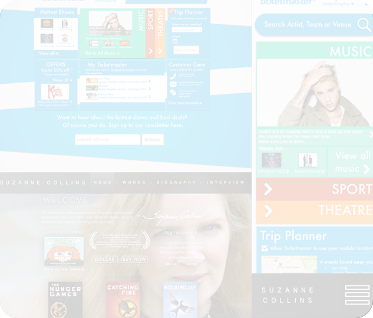

1.
Archie Riley
UX, UI Designer
Available for work immediately after graduation
2.

3.
Key Points -
- UX Design Assistant at HMRC (9 Month Placement)
- Studying BA Web and Multimedia at Teesside University
- Ethusiastic, fast learner
Hi,
I strongly believe in a useful design process of creating prototypes from user needs, testing them with real users and iterating for the best possible product. All with accessability considered from the start.
So far I have learned a great deal from my time on the Tax Credits Service and my university. I am ready to take my work to the next level and I would love to hear from you.